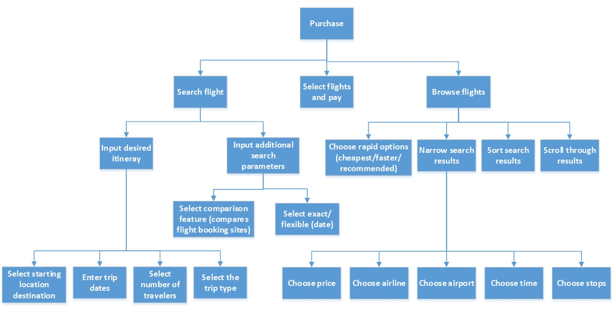
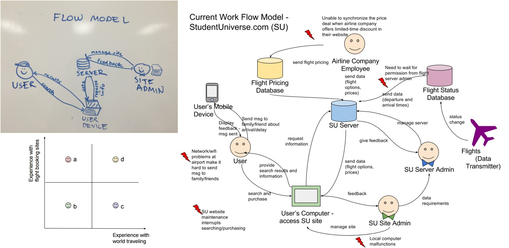
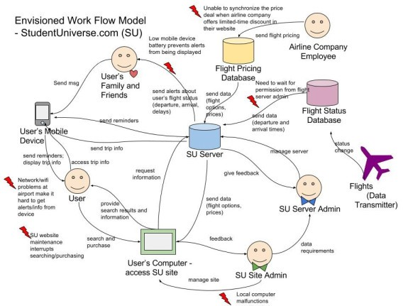
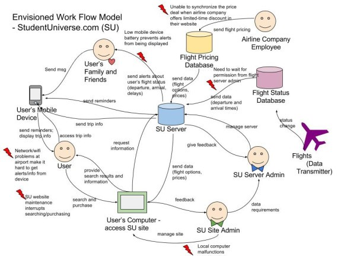

Flight Ticket Website Redesign for International Travelers

We redesigned a flight-booking website based on the special needs of international students who would buy airline tickets to travel between their home countries and America. International travel involves complex issues, such as time difference, custom rules, flight connections, etc. So the redesign took these issues into consideration and provides several features to create a stressless experience of travel.
Contextual Inquiry and Analysis
To get an initial understanding of our users, we started by recruiting volunteers who are from different countries other than America. We interviewed and observed their flight ticket searching behaviors, asked their concerns, needs, and pain points regarding an international travel. I interviewed 3 volunteers.
Then we tried to extract the essential points of the interview and observation results. Firstly we refined the records into brief activity notes and shared our results together so that each team member could quickly reach to the same cognition. Secondly, we used affinity diagram to cluster and organize the information we got.
Modeling
Apart from that, we also thought it necessary to organize the information on the flight ticket system’s perspective. With the current workflow model, we were able to define and clarify the work roles involved and the workflow between them.
The workflow model shows the relationship between work roles and machine roles, yet it was not detailed enough regarding the workflow within the flight ticket website. So we built the task structure model based on our idea of how the system should function. I helped did the final drawing of the task inventory using Visio.


We classified the users into 4 different classes based on their experience with flight booking sites and experience with world traveling. We decided that our target users are people who belong to class b and class a, the people who are not expert at world traveling
Ideation and Sketching
We created a persona who belongs to the class b and it helped us keep the user in mind when thinking about new features. We sketched the current design on the wall and marked out the flaws. Then we discussed the ideas for our new design and we settled for 3 major innovation:
1. A new result displaying method to let the user be able to see more detailed flight information. Especially for travel time, the users would know how long they will spend on the plan, how much do they have to transfer and is it enough for passing a custom, etc.
2. A new travel assistant system that dynamically shows users information they concerned about international travel, including how to get prepared for the trip, what will it be like when flying with a certain airline, how to transfer from terminal A to terminal B at a certain airport, etc. The system will not only display information on the website but will also push some important information to the user via text or email.
3. The travel assistant system as a feature to let users create alert sending to any family member or friend they want. The system can send messages to let them know the changes of the flight status so that the user won’t need to bother connecting with them in case the signal is bad.
 

Prototyping
We started with creating few wireframes. Then the task was divided into 3 parts: search and results, sign up and sign in, travel information and travel assistant. I helped to make the prototype of search and results and resembled the 3 parts together with consistent style.

Evaluation
We adopted usability testing using think-aloud method, cognitive walkthrough, and heuristic evaluation. The results were pretty good with few flaws of the sign up/sign in function. So we fixed it.